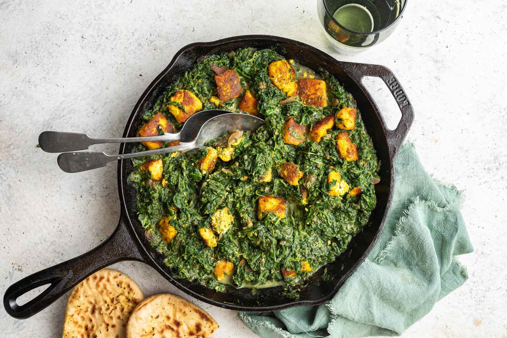

Saag Paneer

Description
Saag Paneer is a popular North Indian dish made with paneer (Indian cottage cheese) and spinach (saag).
The paneer is fried until golden and then simmered in a flavorful spinach gravy infused with spices like cumin, turmeric, and garam masala.
Creamy, rich, and nutritious, it's traditionally served with naan or rice.
Ingredients:
- 200g paneer (cubed)
- 300g fresh spinach (or use frozen)
- 1 medium onion (chopped)
- 2 tomatoes (chopped)
- 2 cloves garlic (minced)
- 1-inch ginger (minced)
- 1 green chili (optional, chopped)
- 1 tsp cumin seeds
- 1 tsp garam masala
- 1/2 tsp turmeric powder
- 1/2 tsp red chili powder (optional)
- 1/2 tsp cumin powder
- 2 tbsp oil or ghee
- Salt to taste
- 2-3 tbsp cream or yogurt (optional)
Instructions:
- Blanch the spinach: Boil spinach in a pot of water for 2-3 minutes until wilted. Drain and transfer to cold water to retain color. Blend into a smooth puree and set aside.
- Fry the paneer: Heat 1 tbsp oil or ghee in a pan over medium heat. Fry the paneer cubes until golden on all sides. Remove and set aside.
- Prepare the masala: In the same pan, add 1 tbsp oil, cumin seeds, and let them crackle. Add chopped onions and sauté until golden brown. Add minced ginger, garlic, and green chili. Sauté for 1-2 minutes.
- Add spices and tomatoes: Add turmeric, cumin powder, garam masala, and red chili powder. Stir well, then add the chopped tomatoes. Cook until the tomatoes break down and form a paste.
- Mix in spinach: Add the spinach puree to the masala and cook for 5-7 minutes. Adjust salt to taste.
- Combine with paneer: Add the fried paneer cubes to the spinach mixture and stir. Let it cook for another 3-4 minutes.
- Finish with cream or yogurt (optional): Stir in cream or yogurt for extra richness. Serve hot with naan or rice.